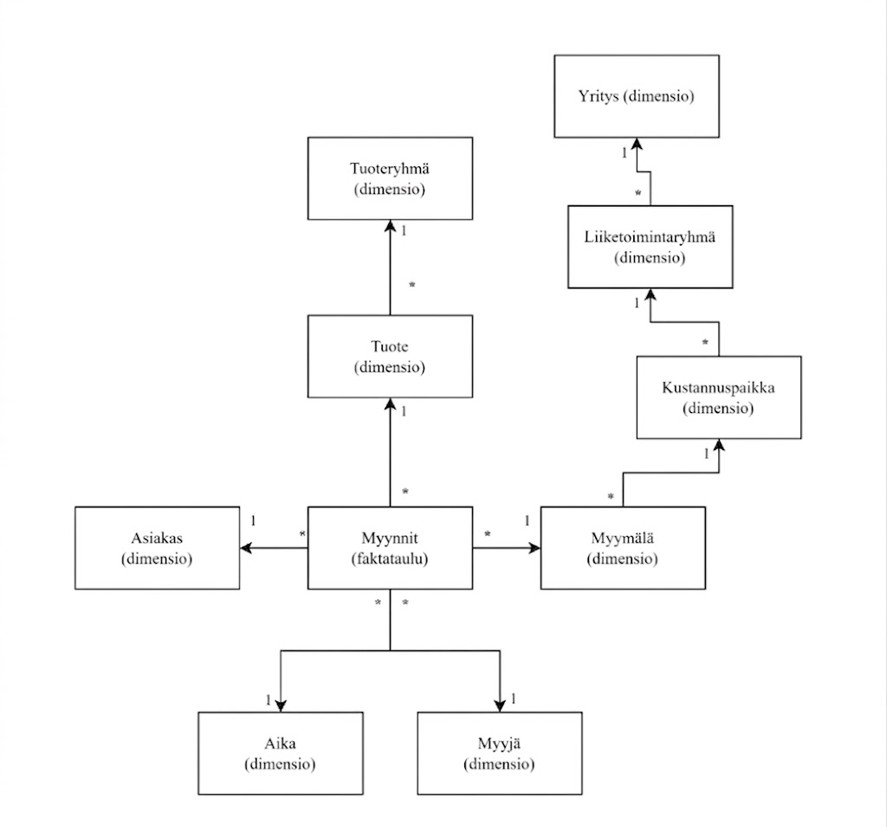

Lumihiutalemalli (Snowflake Schema) on tähtimallia muistuttava tietomalli. Toimintaperiaatteet ovat datan normalisointiin liittyen samanlaiset mutta lumihiutalemallin rakenne on hieman erilainen. Lumihiutalemallissa dimensioiden kuvaava tieto sijaitsee usein useammassa eri taulussa, jotka yhdistyvät syvemmälle dataan, kuten kuvasta ilmenee.

Kuva: Esimerkki lumihiutalemallin tauluista ja niiden yhteyksistä
Lumihiutalemallissa esimerkiksi suuressa organisaatiossa yksi yritys voi sisältää useamman liiketoimintaryhmän ja yksi liiketoimintaryhmä taas voi sisältää useamman kustannuspaikan, ja yhdellä kustannuspaikalla voi olla useampi myymälä. Tämänkaltainen rakenne kuitenkin vaikeuttaa datan lukemista.
Ferrari ja Russo (2017, s.223) pitävät kirjassaan lumihiutalemallia Business Intelligencen maailmassa yhtenä yleisimmin käytetyistä tietomallityypeistä. Ferrari ja Russo (2017, s.223) mainitsevat kirjassaan totuudeksi myös sen, etteivät lumihiutalemallit ole huonoja ratkaisuja, vaikka tähtimalliin verratessa suorituskyky heikkenee lievästi. Lumihiutalemallin käyttötarve on usein välttämätön. Samalla lumihiutalemallia ei kuitenkaan suositella käytettäväksi, jos se ei ole välttämätöntä, sillä yksinkertaisempi tietomalli tekee DAX:lla koodaamisesta ja kehittämisestä helpompaa. Ohjaavan tiedon sisällyttäminen yhteen dimensiotauluun on Power BI - ja SSAS-mallinnuksessa parempi toimintatapa kuin tiedon sisällyttäminen useampaan tauluun. Kehittäminen on nopeampaa ja yksittäisessä taulussa sijaitsevat dimensiotiedot helpottavat DAX-koodaamista ja tekevät siitä helpommin luettavaa.
Hyödyt ja rajoitteet
Hyödyt:
Vähentää toisteisuutta. Vähentää datan toisteisuutta tietovarastossa.
Looginen rakenne. Tietokantatasolla looginen ja normalisoitu rakenne.
Hierarkiat mallinnettavissa luontevasti. Hierarkkiset rakenteet kuten yritys → liiketoimintaryhmä → kustannuspaikka mallinnettavissa luontevasti.
Sopii tietovarastoon. Hyvä valinta DWH- ja välikerroksiin.
Rajoitteet:
DAX monimutkistuu. DAX-koodaamisesta tulee monimutkaisempaa relaatioketjujen takia.
VertiPaq hidastuu. VertiPaq ja Power BI toimivat hitaammin ja huonommin dimensioin normalisoidun tietomallin takia.
Enemmän virhepaikkoja. Useampi relaatio tarkoittaa enemmän mahdollisuuksia virheille.
Ei suositella suoraan Power BI:hin. Litistä dimensiot tähtimalliksi ennen lataamista.
Dataneuvoksen mielipide
Hyvä tietovarastoon, huono Power BI:hin. Lumihiutalemalli on normalisoitu, looginen ja vähentää toisteisuutta — mutta Power BI ei ole tietovarasto. VertiPaq-moottori on optimoitu litteille tähtimallin dimensioille, ja relaatioketjut hidastavat kyselyitä ja tekevät DAX-laskureista hankalampia kirjoittaa.
Litistä ennen lataamista. Jos lähteesi on lumihiutalemallinen tietovarasto ja rakennat Power BI -raporttia, tee litistäminen ennen datan lataamista: yhdistä hierarkkiset dimensiotaulut yhdeksi leveäksi tauluksi ETL-vaiheessa tai SQL-näkymänä. Power BI saa valmiiksi muotoillun tähtimallin — eikä sen tarvitse tehdä yhdistelyjä itse.